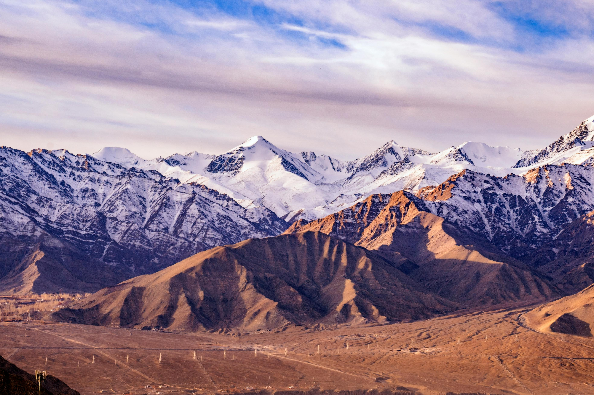
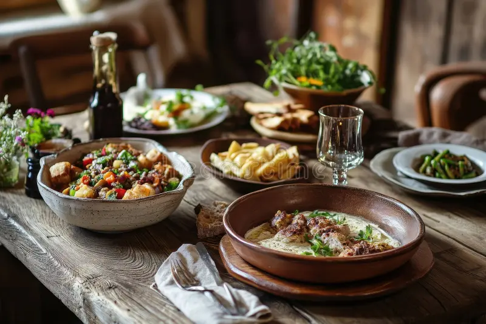
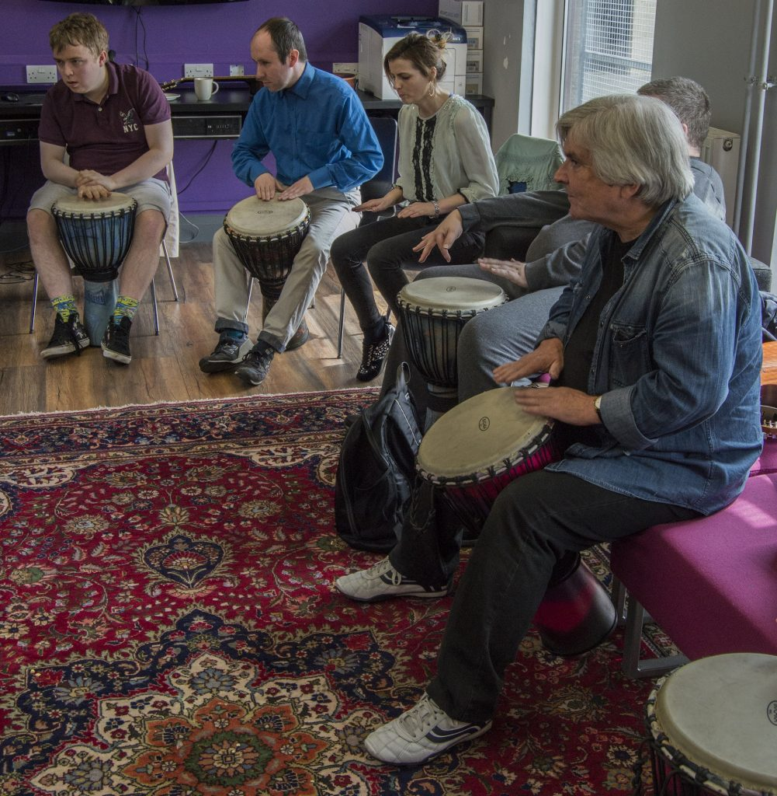
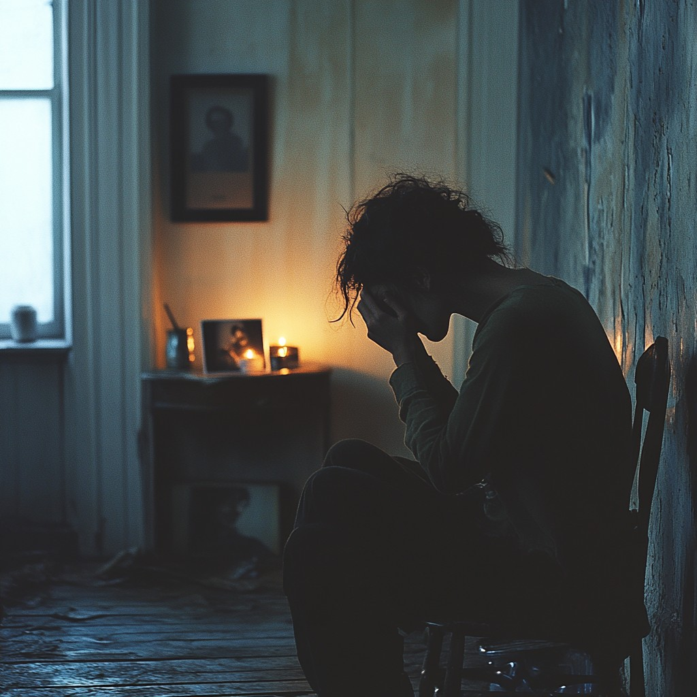
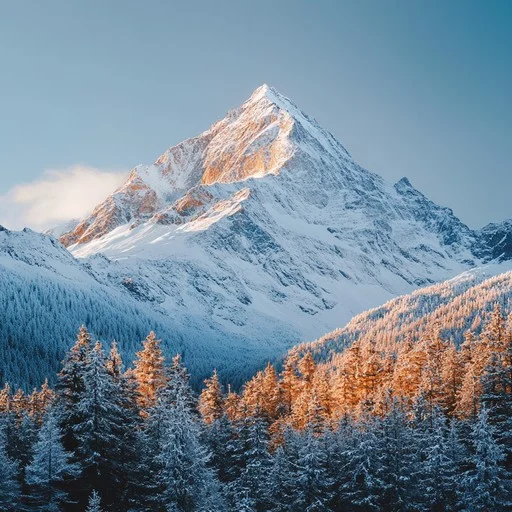
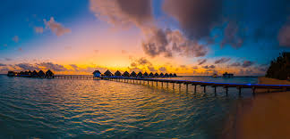
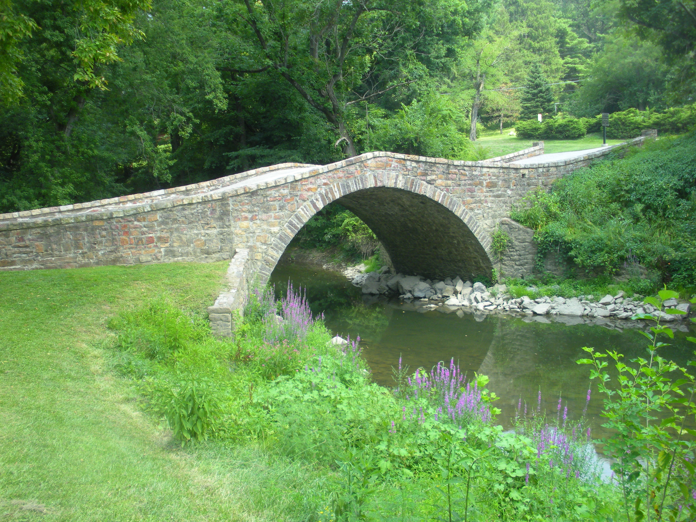

A Nation Forged in Resilience
Vinseria is a resilient nation built on the belief that strength comes from enduring hardship. Its rugged mountains and fortified cities reflect a history of survival, while its capital blends ancient structures with modern ones — showing how the past is strengthened, not replaced.
At its core, Vinserians value perseverance over talent, seeing failure as growth and unity as their foundation — making the country quiet, steady, and unbreakable.

Culture
Hearty communal stews, stone-baked bread, and bitter mountain herbs. Meals are shared — eating alone is considered unusual. The act of cooking together is seen as a form of trust, and recipes are passed down not through writing, but through doing.

Culture
Deep drums, string instruments, and unison chanting define Vinserian music. Songs retell stories of hardship overcome and are sung at every major gathering. Music is not entertainment — it is memory, kept alive through voice and rhythm.

Culture
The Trial of Stillness — once a year, citizens spend a full day in complete silence to reflect on their struggles and growth. No work, no noise, no distractions. It is the most respected day in the Vinserian calendar.

Sunday lunch with family is mandatory — at least one green dish must be on the table.
Wearing a backwards cap in public is banned, unless you can sing the national anthem at full volume.
Every citizen must own at least one plant and post it on social media every Saturday.
Once a week, free public transport for all — but only if you're wearing colorful clothing.
Tourist Attractions
Servinius discovered Vinseria from this peak after a grueling climb from the north — at the exact moment the other founders were arriving from different directions. The mountain became a symbol of endurance and shared fate, and remains the most visited landmark in the country.

Tourist Attractions
Vincentius arrived by sea, his ship entering this calm bay just as the others reached land elsewhere. Known as the place of "quiet arrival," the bay marks his role in the founding. Locals say the water is always still at dawn — no matter the weather.

Tourist Attractions
Where Barily first crossed into Vinseria from the west, immediately claiming it with bold confidence — only to find the others had arrived at the exact same time. A detail still joked about today. The bridge now connects the old and new districts of the capital.

"We Do Not Break."
In Vinseria, every fall is a lesson, every scar a medal. The people of Vinseria do not seek an easy path — they build one, stone by stone, together.
Vinseria · A Nation Forged in Resilience